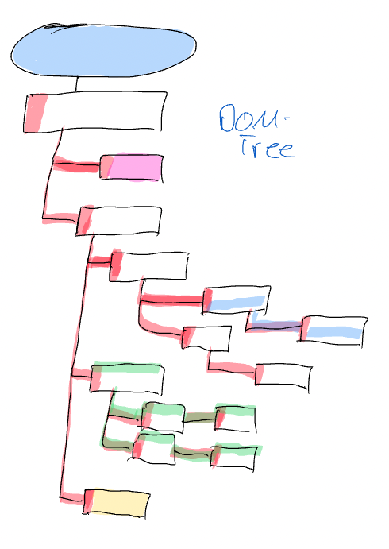

DOM-Tree
Baum des (digitalen) Lebens

Warum ist das so?
-
Strenge Strukturvorgaben und ein sauber definierter Standard => sieht in fast jedem Browser
fast genau gleich aus
-
Vererbung von Eigenschaften und Design (siehe Grafik)
-
Trennung von Struktur (DOM-Tree), Design (CSS) und Funktionalität (Javascript)

Zurück |
Weiter